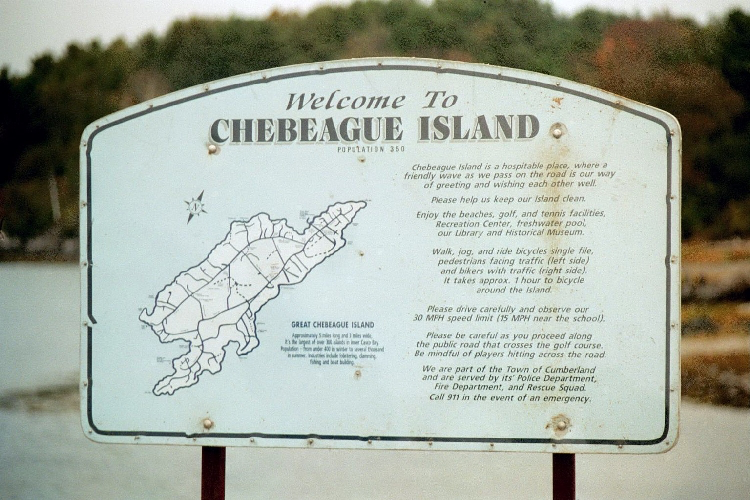
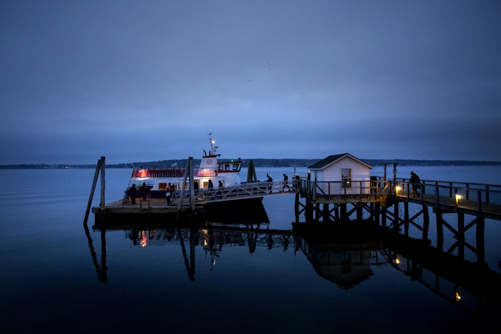
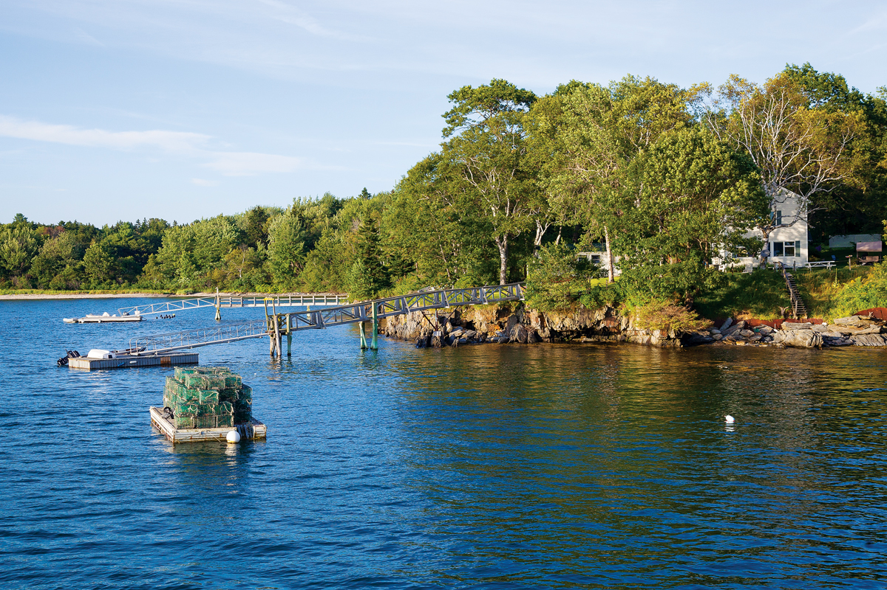

I was born and raised on Chebeague Island, which is a small island, located in the Casco Bay. Chebeague has about 350 year-around residents, no car inspection requirements, and a friendly wave from those in passing. The people on the island are extremely caring and always willing to give an extra hand. I love staying involved with my community and organizations on the island. Chebeague has many beautiful beaches and a ton of places to explore.


